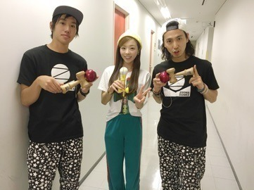
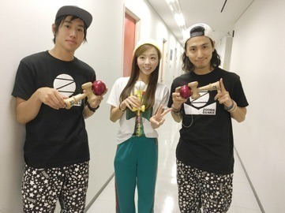
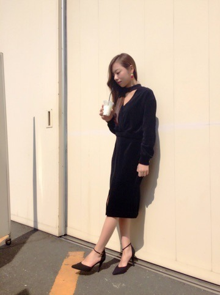
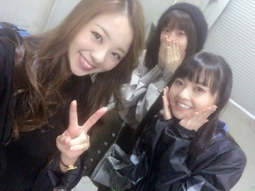

| 2016/10 17 Mon | ストリートけん玉ぁぁぁ |
こんにちわ♡
お久しぶりです.まひろです．

最近は「乃木坂工事中」の方でワイワイさせてもらっています.笑
先週のOAでストリートけん玉どうだったかな♫？
けん玉を教えてくださった，ずーまだんけのイージーさんと小玉さん！！！

先生が着てるTシャツも私が着てるTシャツもずーまだんけオリジナルTシャツだよ～♫

この黄色のけん玉は本番とは違う物を持ってるよ．収録後にプレゼントしてくだりましたぁ．アメリカのブランドのけん玉だとか言ってた気がする様なしない様な... ぃゃ，言ってた。笑
このグリーンのパンツは街で見つけたよ♡ 可愛いからさ こらからリハーサル着に使っちゃうよ。
けん玉の練習は，番組でも言われてた通り，ライブのツアーと重なっていまして，休憩中など，時間をみつけて練習してました 笑 でも，ギターもやらなきゃだったので，正直めちゃくちゃ～～～ 大変でした(*´꒳`*)ノ笑
それにけん玉界でのアイドル枠が空いてるから是非！と言ってくださったので，又機会があれば喜んでけん玉やりたいと思います♡
と... えりかのVTRで練習中に一緒に踊ってる映像を出されてしまいましたが... ぁあ言う映像って いつか5年後10年後に見たら すっごい微笑ましいんだろうな(*^^*)と思いました 笑
ぁあやってしょーもないことで楽しめる事が何よりの幸せだ。。
んな感じでblog更新してなかった期間に色んなことがありましたよ。。 早く報告したいこともありますよ。
昨日久々に黒のピンヒールを履いたんですが，最近ピンヒールを履いてなかったので指が痛かったです♫

どこの？って聞いてくれる方が多いので...
この洋服はねぇ『SPIRAL GIRL』だよ♡
セットアップだけど別売りだよぉ♫だからトップスだけ．とかでもいいかもね！
私は普段 トップスに下はデニムとかにしちゃうかも！
ぁ、 舞台応援行ってきたよ！
皆の頑張りが伝わりました^ ^
皆が頑張ってるから私もそれ以上に頑張ろう‼︎って思えた！ メンバーによって夢は違うけど，それぞれが夢の途中で今頑張り時なんだなと感じます． 自分の為にもグループの為にも皆さんの為にも，必ず夢を叶えますね～．
公演終了後に記念 ぱしゃり

ではでは次は近々更新しまーす♡♡♡
コメント(247)
2016/10/17 20:54